mysql高级使用
[TOC]
1.Linux 系统安装MySQL
1-1.准备安装包
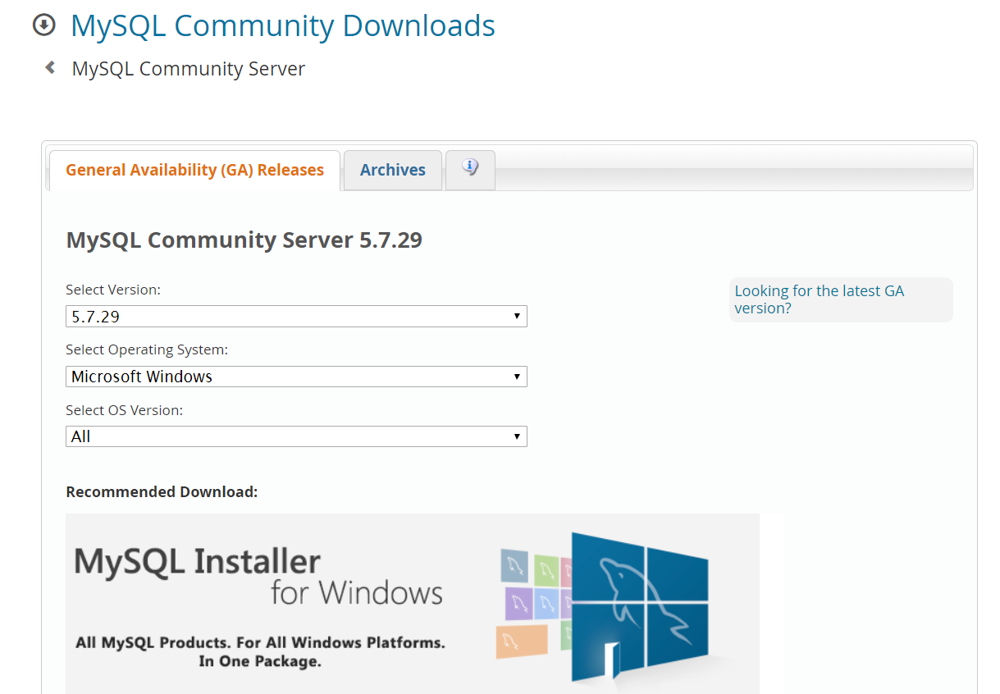
1-2.安装MySQL
直接将安装包推动到linux虚拟机
- 卸载 centos 中预安装的 mysql
1 | rpm -qa | grep -i mysql |
- 解压 mysql 的安装包
1 | //创建文件夹 |
- 安装依赖包
1 | yum -y install libaio.so.1 libgcc_s.so.1 libstdc++.so.6 libncurses.so.5 --setopt=protected_multilib=false |
- 安装 mysql-client
1 | rpm -ivh MySQL-client-5.6.22-1.el6.i686.rpm |
- 安装 mysql-server
1 | rpm -ivh MySQL-server-5.6.22-1.el6.i686.rpm |
1.3 启动 MySQL 服务
1 | 开启 |
1.4 登录MySQL
1 | mysql 安装完成之后, 会自动生成一个随机的密码, 并且保存在一个密码文件中 : |


2.索引
2.1 索引概述
MySQL官方对索引的定义为：索引（index）是帮助MySQL高效获取数据的数据结构（有序）。在数据之外，数据库系统还维护者满足特定查找算法的数据结构，这些数据结构以某种方式引用（指向）数据， 这样就可以在这些数据结构上实现高级查找算法，这种数据结构就是索引。如下面的==示意图==所示 :

左边是数据表，一共有两列七条记录，最左边的是数据记录的物理地址（注意逻辑上相邻的记录在磁盘上也并不是一定物理相邻的）。为了加快Col2的查找，可以维护一个右边所示的二叉查找树，每个节点分别包含索引键值和一个指向对应数据记录物理地址的指针，这样就可以运用二叉查找快速获取到相应数据。
一般来说索引本身也很大，不可能全部存储在内存中，因此索引往往以索引文件的形式存储在磁盘上。索引是数据库中用来提高性能的最常用的工具。
例子：
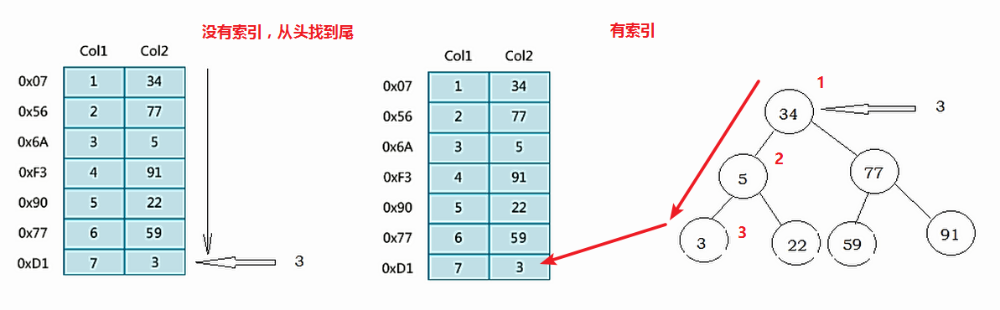
2.2 索引优势劣势
优势
- 类似于书籍的目录索引，提高数据检索的效率，降低数据库的IO成本。
- 通过索引列对数据进行排序，降低数据排序的成本，降低CPU的消耗。
劣势
- 实际上索引也是一张表，该表中保存了主键与索引字段，并指向实体类的记录，所以索引列也是要占用空间的。
- 虽然索引大大提高了查询效率，同时却也降低更新表的速度，如对表进行INSERT、UPDATE、DELETE。因为更新表时，MySQL 不仅要保存数据，还要保存一下索引文件每次更新添加了索引列的字段，都会调整因为更新所带来的键值变化后的索引信息。
2.3 索引结构
索引是在MySQL的存储引擎层中实现的，而不是在服务器层实现的。所以每种存储引擎的索引都不一定完全相同，也不是所有的存储引擎都支持所有的索引类型的。MySQL目前提供了以下4种索引：
- BTREE 索引 ： 最常见的索引类型，大部分索引都支持 B 树索引。
- HASH 索引：只有Memory引擎支持 ， 使用场景简单 。
- R-tree 索引（空间索引）：空间索引是MyISAM引擎的一个特殊索引类型，主要用于地理空间数据类型，通常使用较少，不做特别介绍。
- Full-text （全文索引） ：全文索引也是MyISAM的一个特殊索引类型，主要用于全文索引，InnoDB从Mysql5.6版本开始支持全文索引。
| 索引 | InnoDB引擎 | MyISAM引擎 | Memory引擎 |
|---|---|---|---|
| BTREE索引 | 支持 | 支持 | 支持 |
| HASH 索引 | 不支持 | 不支持 | 支持 |
| R-tree 索引 | 不支持 | 支持 | 不支持 |
| Full-text | 5.6版本之后支持 | 支持 | 不支持 |
我们平常所说的索引，如果没有特别指明，都是指B+树（多路搜索树，并不一定是二叉的）结构组织的索引。其中聚集索引、复合索引、前缀索引、唯一索引默认都是使用 B+tree 索引，统称为 索引。
2.3.1 BTREE 结构
BTree又叫多路平衡搜索树，一颗m叉的BTree特性如下：
- 树中每个节点最多包含m个孩子。
- 除根节点与叶子节点外，每个节点至少有[ceil(m/2)]个孩子。
- 若根节点不是叶子节点，则至少有两个孩子。
- 所有的叶子节点都在同一层。
- 每个非叶子节点由n个key与n+1个指针组成，其中[ceil(m/2)-1] <= n <= m-1
以5叉BTree为例，key的数量：公式推导[ceil(m/2)-1] <= n <= m-1。所以 2 <= n <=4 。当n>4时，中间节点分裂到父节点，两边节点分裂。
插入 C N G A H E K Q M F W L T Z D P R X Y S 数据为例。
演变过程如下：
1). 插入前4个字母 C N G A

2). 插入H，n>4，中间元素G字母向上分裂到新的节点

3). 插入E，K，Q不需要分裂

4). 插入M，中间元素M字母向上分裂到父节点G

5). 插入F，W，L，T不需要分裂

6). 插入Z，中间元素T向上分裂到父节点中

7). 插入D，中间元素D向上分裂到父节点中。然后插入P，R，X，Y不需要分裂

8). 最后插入S，NPQR节点n>5，中间节点Q向上分裂，但分裂后父节点DGMT的n>5，中间节点M向上分裂

到此，该BTREE树就已经构建完成了， BTREE树 和 二叉树 相比， 查询数据的效率更高， 因为对于相同的数据量来说，BTREE的层级结构比二叉树小，因此搜索速度快。
2.3.3 B+TREE 结构
B+Tree为BTree的变种，B+Tree与BTree的区别为：
1). n叉B+Tree最多含有n个key，而BTree最多含有n-1个key。
2). B+Tree的叶子节点保存所有的key信息，依key大小顺序排列。
3). 所有的非叶子节点都可以看作是key的索引部分。

由于B+Tree只有叶子节点保存key信息，查询任何key都要从root走到叶子。所以B+Tree的查询效率更加稳定。
2.3.3 MySQL中的B+Tree
MySql索引数据结构对经典的B+Tree进行了优化。在原B+Tree的基础上，增加一个指向相邻叶子节点的链表指针，就形成了带有顺序指针的B+Tree，提高区间访问的性能。
MySQL中的 B+Tree 索引结构示意图: 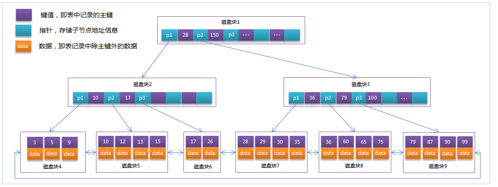
2.4 索引分类
- 单值索引 ：即一个索引只包含单个列，一个表可以有多个单列索引
- 唯一索引 ：索引列的值必须唯一，但允许有空值
- 复合索引 ：即一个索引包含多个列
2.5 索引语法
索引在创建表的时候，可以同时创建， 也可以随时增加新的索引。
准备环境:
1 | //创建数据库 |
2.5.1 创建索引
语法 ：
1 | CREATE [UNIQUE|FULLTEXT|SPATIAL] INDEX index_name |
示例 ：
为city表中的city_name字段创建索引 ；
1 | create index idx_city_name on city(city_name); |
2.5.2 查看索引
语法：
1 | show index from table_name; |
示例：
查看city表中的索引信息；
1 | show index from city; |
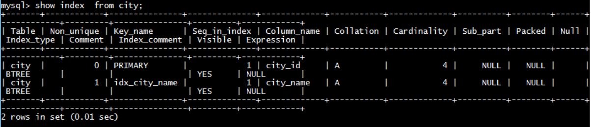
1 | show index from city\G; |
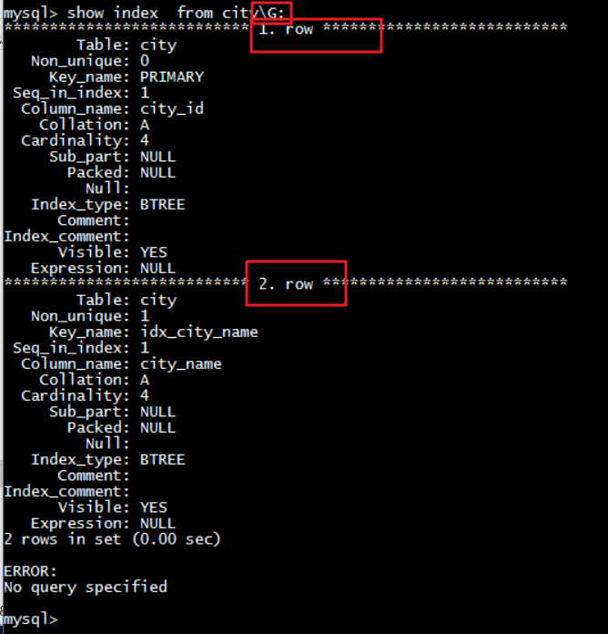
2.5.3 删除索引
语法 ：
1 | DROP INDEX index_name ON tbl_name; |
示例 ：
想要删除city表上的索引idx_city_name，可以操作如下：
1 | drop index idx_city_name on city; |
2.5.4 ALTER命令
- 该语句添加一个主键，这意味着索引值必须是唯一的，且不能为NULL（主键索引）
1 | alter table tb_name add primary key(column_list); |
- 这条语句创建索引的值必须是唯一的（除了NULL外，NULL可能会出现多次）（唯一索引）
1 | alter table tb_name add unique index_name(column_list); |
- 添加普通索引， 索引值可以出现多次。
1 | alter table tb_name add index index_name(column_list); |
- 该语句指定了索引为FULLTEXT， 用于全文索引
1 | alter table tb_name add fulltext index_name(column_list); |
2.6 索引设计原则
索引的设计可以遵循一些已有的原则，创建索引的时候请尽量考虑符合这些原则，便于提升索引的使用效率，更高效的使用索引。
对查询频次较高，且数据量比较大的表建立索引。
索引字段的选择，最佳候选列应当从where子句的条件中提取，如果where子句中的组合比较多，那么应当挑选最常用、过滤效果最好的列的组合。
使用唯一索引，区分度越高，使用索引的效率越高。
索引可以有效的提升查询数据的效率，但索引数量不是多多益善，索引越多，维护索引的代价自然也就水涨船高。对于插入、更新、删除等DML操作比较频繁的表来说，索引过多，会引入相当高的维护代价，降低DML操作的效率，增加相应操作的时间消耗。另外索引过多的话，MySQL也会犯选择困难病，虽然最终仍然会找到一个可用的索引，但无疑提高了选择的代价。
使用短索引，索引创建之后也是使用硬盘来存储的，因此提升索引访问的I/O效率，也可以提升总体的访问效率。假如构成索引的字段总长度比较短，那么在给定大小的存储块内可以存储更多的索引值，相应的可以有效的提升MySQL访问索引的I/O效率。
利用最左前缀，N个列组合而成的组合索引，那么相当于是创建了N个索引，如果查询时where子句中使用了组成该索引的前几个字段，那么这条查询SQL可以利用组合索引来提升查询效率。
1 | 创建复合索引: |
3. 视图
3.1 视图概述
视图（View）是一种虚拟存在的表。视图并不在数据库中实际存在，行和列数据来自定义视图的查询中使用的表，并且是在使用视图时动态生成的。通俗的讲，视图就是一条SELECT语句执行后返回的结果集。所以我们在创建视图的时候，主要的工作就落在创建这条SQL查询语句上。
视图相对于普通的表的优势主要包括以下几项。
- 简单：使用视图的用户完全不需要关心后面对应的表的结构、关联条件和筛选条件，对用户来说已经是过滤好的复合条件的结果集。
- 安全：使用视图的用户只能访问他们被允许查询的结果集，对表的权限管理并不能限制到某个行某个列，但是通过视图就可以简单的实现。
- 数据独立：一旦视图的结构确定了，可以屏蔽表结构变化对用户的影响，源表增加列对视图没有影响；源表修改列名，则可以通过修改视图来解决，不会造成对访问者的影响。
3.2 创建或者修改视图
创建视图的语法为：
1 | CREATE [OR REPLACE] [ALGORITHM = {UNDEFINED | MERGE | TEMPTABLE}] |
修改视图的语法为：
1 | ALTER [ALGORITHM = {UNDEFINED | MERGE | TEMPTABLE}] |
1 | 选项 : |
示例：
创建city_country_view视图 , 执行如下SQL :
1 | create view city_country_view |
查询视图 :
1 | select * from city_country_view; |
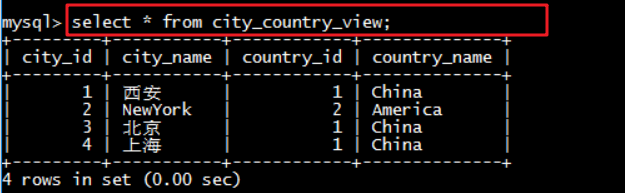
修改视图：
1 | update city_country_view set city_name='西安市' where city_id=1; |
更新视图，也会相应更新表的数据
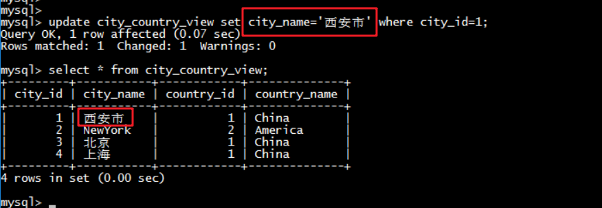
3.3 查看视图
从 MySQL 5.1 版本开始，使用 SHOW TABLES 命令的时候不仅显示表的名字，同时也会显示视图的名字，而不存在单独显示视图的 SHOW VIEWS 命令。
1 | show tables; |
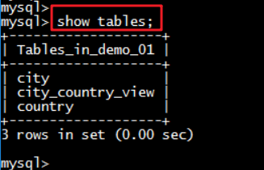
同样，在使用 SHOW TABLE STATUS 命令的时候，不但可以显示表的信息，同时也可以显示视图的信息。
1 | show table status like 'city_country_view'\G; |
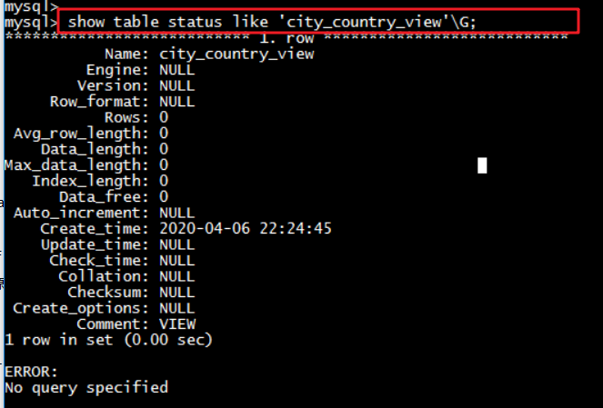
如果需要查询某个视图的定义，可以使用 SHOW CREATE VIEW 命令进行查看 ：
1 | show create view city_country_view \G; |
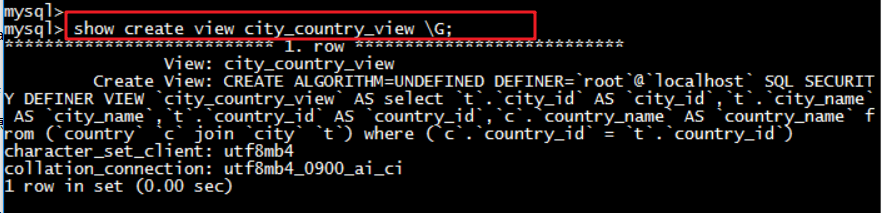
3.4 删除视图
语法 :
1 | DROP VIEW [IF EXISTS] view_name [, view_name] ...[RESTRICT | CASCADE] |
示例
删除视图city_country_view :
1 | DROP VIEW city_country_view ; |
4. 存储过程和函数
4.1 存储过程和函数概述
存储过程和函数是 事先经过编译并存储在数据库中的一段 SQL 语句的集合，调用存储过程和函数可以简化应用开发人员的很多工作，减少数据在数据库和应用服务器之间的传输，对于提高数据处理的效率是有好处的。
存储过程和函数的区别在于函数必须有返回值，而存储过程没有。
函数 ： 是一个有返回值的过程 ；
过程 ： 是一个没有返回值的函数 ；
4.2 创建存储过程
1 | CREATE PROCEDURE procedure_name ([proc_parameter[,...]]) |
示例 ：
1 | delimiter $ |
知识小贴士
DELIMITER
该关键字用来声明SQL语句的分隔符 , 告诉 MySQL 解释器，该段命令是否已经结束了，mysql是否可以执行了。默认情况下，delimiter是分号;。在命令行客户端中，如果有一行命令以分号结束，那么回车后，mysql将会执行该命令。
4.3 调用存储过程
1 | call procedure_name() ; |
示例：
1 | call pro_test1(); |
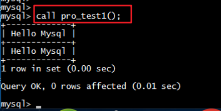
4.4 查看存储过程
1 | -- 查询demo_01数据库中的所有的存储过程 |
4.5 删除存储过程
1 | DROP PROCEDURE [IF EXISTS] sp_name ； |
示例：
1 | drop procedure pro_test1; |
4.6 语法
存储过程是可以编程的，意味着可以使用变量，表达式，控制结构 ， 来完成比较复杂的功能。
4.6.1 变量
DECLARE
通过 DECLARE 可以定义一个局部变量，该变量的作用范围只能在 BEGIN…END 块中。
1 | DECLARE var_name[,...] type [DEFAULT value] |
示例 :
1 | delimiter $ |
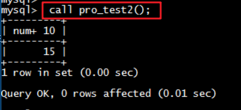
- SET
直接赋值使用 SET，可以赋常量或者赋表达式，具体语法如下：
1 | SET var_name = expr [, var_name = expr] ... |
示例 :
1 | delimiter $ |
也可以通过select … into 方式进行赋值操作 :
1 | DELIMITER $ |
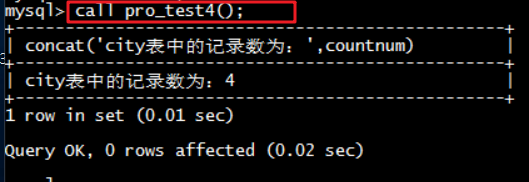
4.6.2 if条件判断
语法结构 :
1 | if search_condition then statement_list |
需求：
1 | 根据定义的身高变量，判定当前身高的所属的身材类型 |
示例 :
1 | delimiter $ |
调用结果为 :
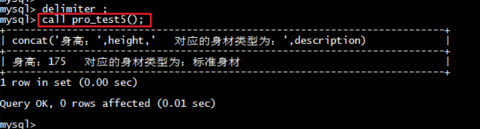
4.6.3 传递参数
语法格式 :
1 | create procedure procedure_name([in/out/inout] 参数名 参数类型) |
IN - 输入
需求 :
1 | 根据定义的身高变量，判定当前身高的所属的身材类型 |
示例 :
1 | delimiter $ |
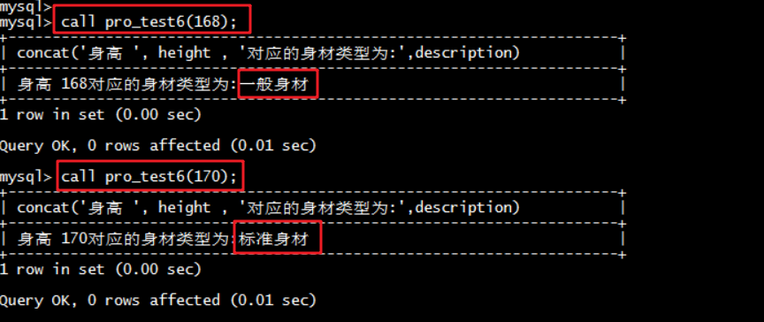
OUT-输出
需求 :
1 | 根据传入的身高变量，获取当前身高的所属的身材类型 |
示例:
1 | delimiter $ |
调用:
1 | call pro_test7(168, @description); |
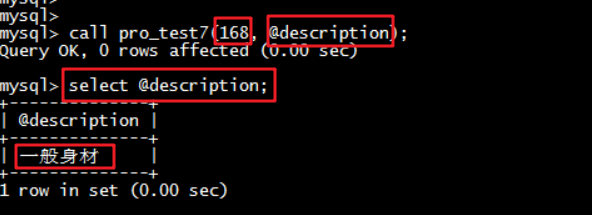
小知识
@description : 这种变量要在变量名称前面加上“@”符号，叫做用户会话变量，代表整个会话过程他都是有作用的，这个类似于全局变量一样。
@@global.sort_buffer_size : 这种在变量前加上 “@@” 符号, 叫做 系统变量
4.6.4 case结构
语法结构 :
1 | 方式一 : 有值，等于执行后面 |
需求:
1 | 给定一个月份, 然后计算出所在的季度 |
示例 :
1 | delimiter $ |
4.6.5 while循环
语法结构:
1 | while search_condition do |
需求:
1 | 计算从1加到n的值 |
示例 :
1 | delimiter $ |
4.6.6 repeat结构
有条件的循环控制语句, 当满足条件的时候退出循环 。while 是满足条件才执行，repeat 是满足条件就退出循环。
语法结构 :
1 | REPEAT |
需求:
1 | 计算从1加到n的值 |
示例 :
1 | delimiter $ |
4.6.7 loop语句
LOOP 实现简单的循环，退出循环的条件需要使用其他的语句定义，通常可以使用 LEAVE 语句实现，具体语法如下：
1 | [begin_label:] LOOP |
如果不在 statement_list 中增加退出循环的语句，那么 LOOP 语句可以用来实现简单的死循环。
4.6.8 leave语句
用来从标注的流程构造中退出，通常和 BEGIN … END 或者循环一起使用。下面是一个使用 LOOP 和 LEAVE 的简单例子 , 退出循环：
1 | delimiter $ |
4.6.9 游标/光标
游标是用来存储查询结果集的数据类型 , 在存储过程和函数中可以使用光标对结果集进行循环的处理。光标的使用包括光标的声明、OPEN、FETCH 和 CLOSE，其语法分别如下。
声明光标：
1 | DECLARE cursor_name CURSOR FOR select_statement ; |
OPEN 光标：打开
1 | OPEN cursor_name ; |
FETCH 光标：
1 | FETCH cursor_name INTO var_name [, var_name] ... |
CLOSE 光标：关闭
1 | CLOSE cursor_name ; |
示例 :
初始化脚本:
1 | create table emp( |
1 | -- 查询emp表中数据, 并逐行获取进行展示 |
声明：declare XXX cursor for XXX;
当抓取不到数据时，设置变量
定义变量：declare exit handler for not found set XXX;
通过循环结构 , 获取游标中的数据 :
1 | DELIMITER $ |
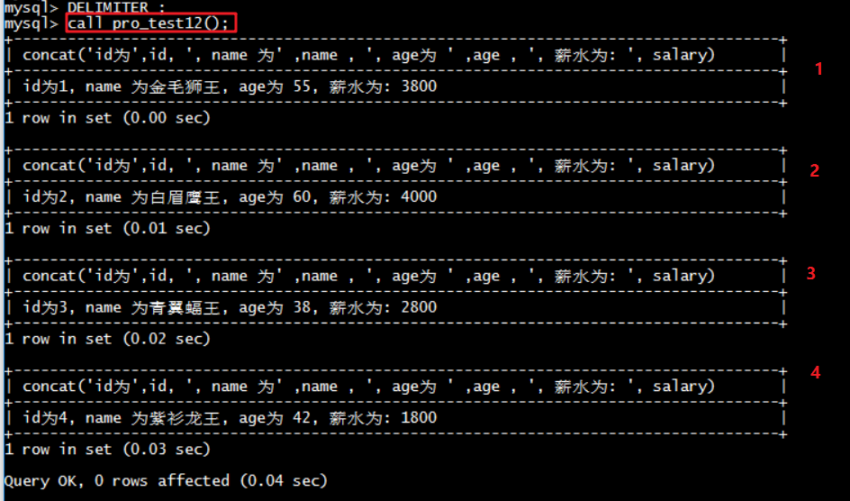
4.7 存储函数
语法结构:
1 | CREATE FUNCTION function_name([param type ... ]) |
案例 :
定义一个存储过程, 请求满足条件的总记录数 ;
1 | delimiter $ |
调用:
1 | select count_city(1); |
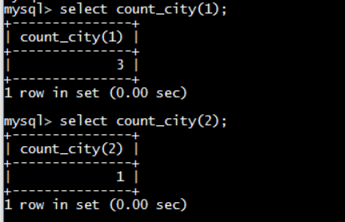
出现错误：
1 | ERROR 1418 (HY000): This function has none of DETERMINISTIC, NO SQL, or READS SQL DATA in its declaration and binary logging is enabled (you *might* want to use the less safe log_bin_trust_function_creators variable) |
解决方案：
1 | set global log_bin_trust_function_creators=1; |
mysql 报错This function has none of DETERMINISTIC解决方案
5. 触发器
5.1 介绍
触发器是与表有关的数据库对象，指在 insert/update/delete 之前或之后，触发并执行触发器中定义的SQL语句集合。触发器的这种特性可以协助应用在数据库端确保数据的完整性 , 日志记录 , 数据校验等操作 。
使用别名 OLD 和 NEW 来引用触发器中发生变化的记录内容，这与其他的数据库是相似的。现在触发器还只支持行级触发，不支持语句级触发。
| 触发器类型 | NEW 和 OLD的使用 |
|---|---|
| INSERT 型触发器 | NEW 表示将要或者已经新增的数据 |
| UPDATE 型触发器 | OLD 表示修改之前的数据 , NEW 表示将要或已经修改后的数据 |
| DELETE 型触发器 | OLD 表示将要或者已经删除的数据 |
5.2 创建触发器
语法结构 :
1 | create trigger trigger_name |
示例 ：
1 | 通过触发器记录 emp 表的数据变更日志 , 包含增加, 修改 , 删除 ; |
首先创建一张日志表 :
1 | create table emp_logs( |
创建 insert 型触发器，完成插入数据时的日志记录 :
1 | DELIMITER $ |
创建 update 型触发器，完成更新数据时的日志记录 :
1 | DELIMITER $ |
创建delete 行的触发器 , 完成删除数据时的日志记录 :
1 | DELIMITER $ |
测试：
1 | insert into emp(id,name,age,salary) values(null, '光明左使',30,3500); |
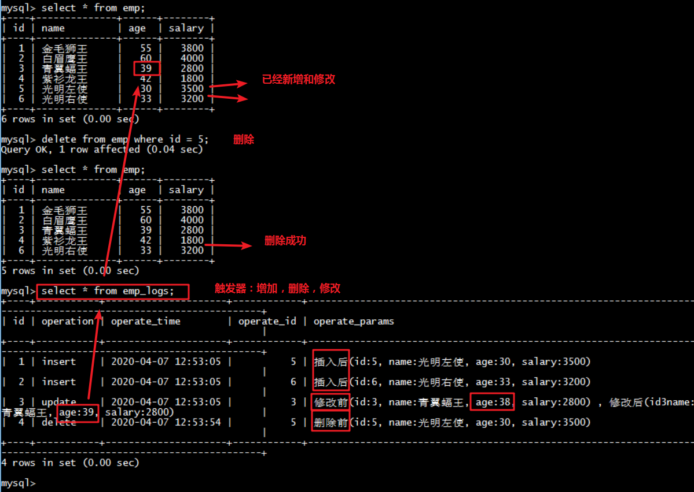
5.3 删除触发器
语法结构 :
1 | drop trigger [schema_name.]trigger_name |
如果没有指定 schema_name，默认为当前数据库 。
5.4 查看触发器
可以通过执行 SHOW TRIGGERS 命令查看触发器的状态、语法等信息。
语法结构 ：
1 | show triggers ； |